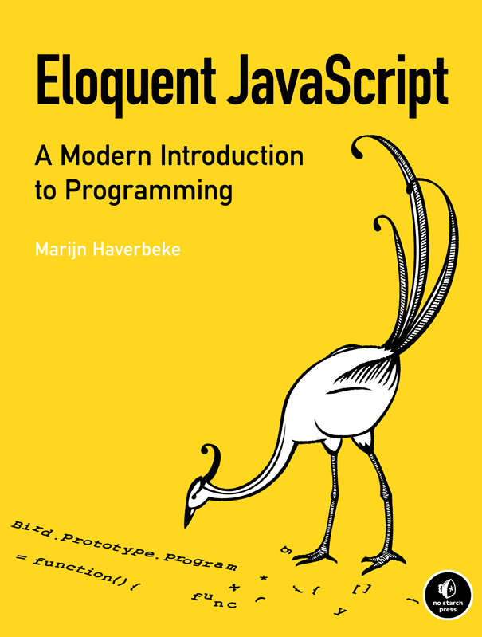

Learning Objectives:
- Conversant on technologies used to design and build interactive media applications.
- Understand and apply basic programming constructs such as functions, data types. and variables, conditionals, and loops using a scripting language.
- Describe and use standard formats for structuring and presenting content.
- Describe and create multimedia assets using standard lossless and lossy formats.
- Build simple interactive media projects that incorporate programming, content, multimedia assets, and presentation.
- Describe and follow common processes and tools used for managing team projects.
Required Books

